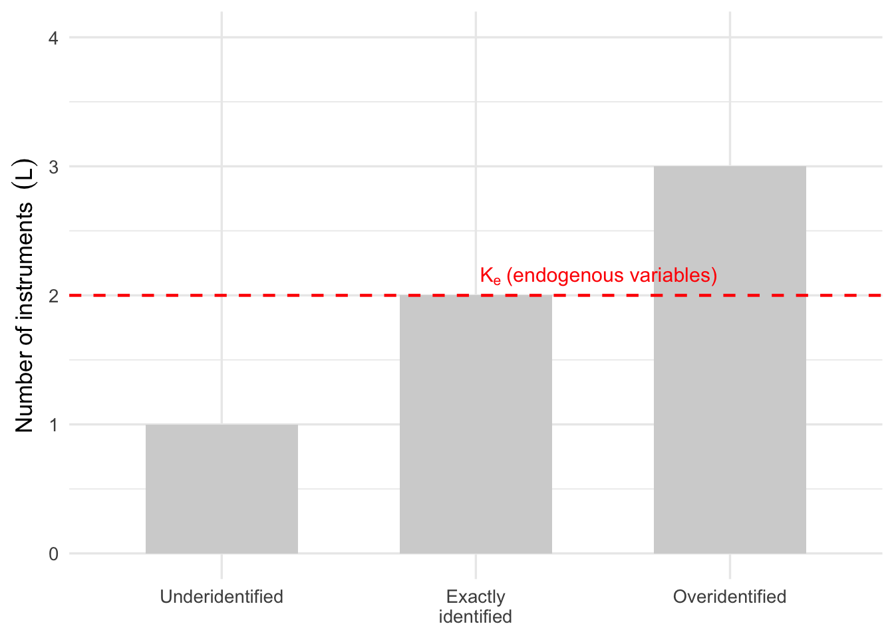

32 Instrumental Variables Estimation
In the previous chapter, we introduced the zero conditional mean assumption,
\[ E(\varepsilon \mid X_1, X_2, \ldots, X_K) = 0, \]
and discussed why it is fundamental for the ordinary least squares (OLS) estimator to produce unbiased and consistent estimates. We also saw that this assumption is violated when one or more explanatory variables are endogenous, meaning they are correlated with the error term. Endogeneity can arise through omitted variables, simultaneity (or reverse causality), and measurement error, and it prevents OLS from recovering the true causal effect of an explanatory variable.
In many empirical applications, however, endogeneity is unavoidable. For example, more educated individuals may also possess higher innate ability, regions experiencing poor health outcomes may increase public health spending, and survey variables are often measured with error. In each of these situations, the explanatory variable is correlated with unobserved factors that also affect the outcome, making a simple regression analysis unreliable.
This raises an important question:
How can we estimate causal effects when the explanatory variable is endogenous?
One of the most widely used solutions is instrumental variables (IV) estimation. Rather than using all of the observed variation in an endogenous explanatory variable, IV estimation exploits only the variation generated by an external variable, known as an instrument. If the instrument satisfies certain conditions, this variation is exogenous, allowing us to identify the causal effect even when OLS fails.
The central idea is illustrated in Figure Figure 32.1. Instead of relying on the potentially endogenous relationship between \(x\) and \(y\), we use a third variable, \(z\), that influences \(x\) but has no direct effect on \(y\). By isolating the component of \(x\) that is explained by \(z\), we obtain variation that is free from the endogeneity problem.
Throughout this chapter, we examine the conditions that make an instrument valid, derive the instrumental variables estimator, and show how it is implemented using two-stage least squares (2SLS). We also discuss practical issues such as identification, weak instruments, and diagnostic tests that help assess whether an IV strategy is credible.
Example 32.1: Public Health Expenditure and Health Outcomes
To illustrate the need for instrumental variables, consider a study of the relationship between public health expenditure and health outcomes across a sample of cities. For each city \(i\), suppose we observe
- \(y_i\): a measure of public health outcomes, such as the proportion of children suffering from a particular disease;
- \(x_i\): public health expenditure per capita.
Our objective is to estimate the regression model
\[ y_i = \beta_0 + \beta_1 x_i + \varepsilon_i, \]
where \(\beta_1\) measures the causal effect of public health expenditure on health outcomes.
Based on economic reasoning, we expect greater investment in public health to improve health outcomes. For example, higher spending may finance vaccination programs, sanitation projects, or improved access to healthcare, thereby reducing the incidence of disease.
At first glance, it might seem sufficient to estimate this relationship using OLS. However, there is an important complication. Public health expenditure is not determined randomly. Cities experiencing poorer health outcomes are likely to increase their health spending in response to disease outbreaks. Consequently, health expenditure and health outcomes are jointly determined.
This reverse causality implies that the explanatory variable \(x_i\) is correlated with the error term,
\[ \operatorname{Cov}(x_i,\varepsilon_i) \neq 0, \]
violating the zero conditional mean assumption discussed in the previous chapter. As a result, OLS no longer estimates the causal effect of public health expenditure.
One possible solution is to find another variable that influences public health expenditure but has no direct effect on health outcomes. Suppose we observe
- \(z_i\): per capita income in city \(i\).
Cities with higher incomes typically have a larger tax base and therefore more resources to spend on public health. Thus, income is likely to be correlated with public health expenditure. At the same time, provided that income does not directly affect health outcomes after accounting for other relevant factors, it affects health only indirectly through public health expenditure.
Figure Figure 32.2 illustrates this idea.
Per capita income therefore provides a source of variation in public health expenditure that is plausibly unrelated to the unobserved determinants of health outcomes. Instrumental variables estimation exploits this exogenous variation to estimate the causal effect of public health expenditure, even though a simple OLS regression cannot.
This example illustrates the central idea of instrumental variables estimation: rather than using all observed variation in the endogenous explanatory variable \(x_i\), we isolate the component of \(x_i\) that is explained by an external source of variation, namely the instrument \(z_i\).
32.1 What Makes a Good Instrument?
The motivating example in the previous section introduced the idea of an instrumental variable. However, not every variable can serve as a valid instrument. For an instrument to identify a causal effect, it must satisfy two fundamental conditions:
- Relevance: the instrument must be related to the endogenous explanatory variable.
- Exogeneity (or the exclusion restriction): the instrument must not affect the outcome except through the explanatory variable.
Both conditions are essential. If either one fails, the instrumental variables estimator is generally inconsistent and cannot be interpreted as measuring a causal effect.
Figure Figure 32.3 summarizes these relationships.
Notice that the instrument affects the outcome only through the explanatory variable. There is no direct path from the instrument to the outcome, nor is the instrument related to the structural error term. These are precisely the conditions required for instrumental variables estimation to recover the causal effect.
32.1.1 Relevance
The relevance condition requires that the instrument be correlated with the endogenous explanatory variable. In other words, changes in the instrument must induce changes in the explanatory variable.
Formally,
\[ \operatorname{Cov}(z_i,x_i)\neq0. \]
Returning to our public health example, per capita income is a plausible instrument because wealthier cities generally have a larger tax base and can therefore spend more on public health. Income is expected to explain at least some of the variation in public health expenditure.
If the instrument has little or no relationship with the explanatory variable, it contains no useful information for identifying the causal effect. Such instruments are known as weak instruments, and they can lead to highly unreliable estimates. We discuss this issue in more detail later in the chapter.
32.1.2 Exogeneity (Exclusion Restriction)
The second requirement is the exogeneity or exclusion restriction. It states that the instrument must influence the outcome only through its effect on the endogenous explanatory variable.
Mathematically,
\[ \operatorname{Cov}(z_i,\varepsilon_i)=0. \]
This assumption means that the instrument must not be correlated with any unobserved factors affecting the outcome variable.
In the public health example, this requires that per capita income affects health outcomes only through public health expenditure. If income also directly improves health—for example, because wealthier individuals can purchase better nutrition or healthcare independently of public spending—then income would violate the exclusion restriction and would no longer be a valid instrument.
Unlike the relevance condition, which can be assessed empirically, the exclusion restriction cannot usually be tested directly. Instead, its validity depends on careful subject-matter knowledge of the application being studied. Consequently, the credibility of an instrumental variables analysis rests not only on statistical evidence but also on the plausibility of the proposed instrument.
Key Point
A valid instrument must satisfy both conditions simultaneously.
- Relevance ensures that the instrument contains useful information about the endogenous explanatory variable.
- Exogeneity ensures that this information is free from the endogeneity problem affecting the original regression.
An instrument that satisfies only one of these conditions is not a valid instrument.
32.2 Two-Stage Least Squares (2SLS)
Instrumental variables estimation is most commonly implemented using the two-stage least squares (2SLS) estimator. As its name suggests, the method consists of two ordinary least squares (OLS) regressions. The first regression isolates the exogenous component of the endogenous explanatory variable, while the second regression uses this exogenous variation to estimate the causal effect on the outcome.
Recall that the problem with OLS is that the explanatory variable \(x_i\) is correlated with the structural error term,
\[ \operatorname{Cov}(x_i,\varepsilon_i)\neq0, \]
which violates the zero conditional mean assumption. Consequently, the observed variation in \(x_i\) contains two distinct components:
- Exogenous variation, which is unrelated to the error term and can be used to estimate the causal effect.
- Endogenous variation, which is correlated with the error term and leads to biased and inconsistent OLS estimates.
The objective of 2SLS is to separate these two sources of variation and retain only the exogenous component.
Suppose that, in addition to observing the outcome variable \(y_i\) and the endogenous explanatory variable \(x_i\), we also observe an instrumental variable \(z_i\). If the instrument is valid, it provides a source of variation in \(x_i\) that is unrelated to the structural error term \(\varepsilon_i\). The first stage of the procedure exploits this relationship by regressing \(x_i\) on the instrument,
\[ x_i=\gamma_0+\gamma_1z_i+v_i, \]
where \(\gamma_0\) and \(\gamma_1\) are unknown parameters and \(v_i\) represents the remaining variation in \(x_i\) that is not explained by the instrument.
This regression is referred to as the first-stage regression. Its purpose is not to estimate the causal effect of interest, but rather to identify the component of \(x_i\) that is explained by the instrument. From this regression we obtain the fitted values
\[ \hat{x}_i=\hat{\gamma}_0+\hat{\gamma}_1z_i, \]
which represent the variation in \(x_i\) attributable to the instrument.
If the instrument satisfies the relevance and exclusion assumptions discussed earlier, the fitted values \(\hat{x}_i\) are uncorrelated with the structural error term. They therefore provide an exogenous version of the original explanatory variable.
In the second stage, the original endogenous variable is replaced by its fitted values, and the regression model is estimated using OLS:
\[ y_i=\beta_0+\beta_1\hat{x}_i+\varepsilon_i. \]
The estimated coefficient \(\hat{\beta}_1\) measures the effect of the component of \(x_i\) that is generated by the instrument. Because this variation is exogenous, the resulting estimator is consistent for the true causal effect.
The two-stage procedure is illustrated in Figure Figure 32.4.
The intuition behind 2SLS is straightforward. The observed explanatory variable \(x_i\) contains both exogenous and endogenous variation. The first stage uses the instrument to extract only the exogenous component, represented by \(\hat{x}_i\). The second stage then estimates the relationship between this exogenous component and the outcome variable. In this way, 2SLS removes the source of bias that makes ordinary least squares unreliable when the explanatory variable is endogenous.
A Mathematical Derivation of the IV Estimator
The two-stage least squares algorithm provides an intuitive way to estimate an instrumental variables model. In the special case of one endogenous explanatory variable and one instrument, however, the estimator can also be derived directly using properties of covariance.
Starting from the structural model,
\[ y_i=\beta_0+\beta_1x_i+\varepsilon_i, \]
take the covariance of both sides with the instrument \(z_i\):
\[ \operatorname{Cov}(y_i,z_i) = \operatorname{Cov}(\beta_0+\beta_1x_i+\varepsilon_i,z_i). \]
Using the linearity of covariance,
\[ \begin{aligned} \operatorname{Cov}(y_i,z_i) &= \operatorname{Cov}(\beta_0,z_i) +\operatorname{Cov}(\beta_1x_i,z_i) +\operatorname{Cov}(\varepsilon_i,z_i) \\ &= 0+\beta_1\operatorname{Cov}(x_i,z_i)+0. \end{aligned} \]
The first term is zero because \(\beta_0\) is a constant, while the final term is zero because a valid instrument satisfies the exclusion restriction,
\[ \operatorname{Cov}(z_i,\varepsilon_i)=0. \]
Rearranging gives
\[ \beta_1= \frac{\operatorname{Cov}(y_i,z_i)} {\operatorname{Cov}(x_i,z_i)}. \]
In practice, the population covariances are unknown and are replaced by sample covariances,
\[ \hat{\beta}_{IV} = \frac{\widehat{\operatorname{Cov}}(y,z)} {\widehat{\operatorname{Cov}}(x,z)}. \]
This expression is known as the instrumental variables (IV) estimator or, in this simple setting, the Wald estimator. Although it looks quite different from the two-stage least squares algorithm, the two approaches produce exactly the same estimate when there is a single endogenous explanatory variable and a single instrument. The 2SLS formulation is preferred because it extends naturally to models with multiple instruments and multiple endogenous explanatory variables.
32.3 Identification
So far, we have considered the simplest possible instrumental variables model, consisting of a single endogenous explanatory variable and a single instrument. In this setting, the two-stage least squares estimator is straightforward to compute, and the causal effect can be identified provided that the instrument satisfies the relevance and exclusion conditions.
In practice, however, empirical applications are often more complex. A model may contain several endogenous explanatory variables, multiple potential instruments, or both. Before an IV model can be estimated, we must determine whether there is sufficient information to identify all of the causal effects of interest.
This leads to the concept of identification.
Suppose a regression model contains
- \(K_e\) endogenous explanatory variables, and
- \(L\) instrumental variables.
The relationship between \(K_e\) and \(L\) determines whether the model is identified.
32.3.1 Exactly Identified Models
A model is exactly identified (or just identified) when the number of instruments equals the number of endogenous explanatory variables,
\[ L = K_e. \]
In this case, there are just enough instruments to identify all of the endogenous variables in the model. The examples considered so far in this chapter fall into this category, where
- \(K_e = 1\) (one endogenous explanatory variable, \(x_i\)), and
- \(L = 1\) (one instrument, \(z_i\)).
Exactly identified models can be estimated using two-stage least squares, but because there is only one instrument available for each endogenous variable, there is no way to empirically assess whether the instruments satisfy the exclusion restriction.
32.3.2 Overidentified Models
A model is overidentified when there are more instruments than endogenous explanatory variables,
\[ L > K_e. \]
In this situation, the model contains more information than is strictly necessary for identification. This is often desirable because additional valid instruments can improve the efficiency of the estimator by exploiting more exogenous variation.
An important advantage of overidentified models is that they allow the validity of the instruments to be assessed using overidentification tests, such as the Sargan or Hansen \(J\) test, which are discussed later in the chapter.
However, adding instruments is beneficial only if they are both relevant and valid. Including weak or invalid instruments may reduce the precision and reliability of the estimates.
32.3.3 Underidentified Models
A model is underidentified when there are fewer instruments than endogenous explanatory variables,
\[ L < K_e. \]
In this case, there is insufficient exogenous information to disentangle the endogenous variation from the exogenous variation in every explanatory variable. Consequently, the causal effects cannot be identified, and the model cannot be estimated using instrumental variables.
The only solution is to find additional valid instruments.
Figure Figure 32.5 summarizes the three possible cases.

Key Point
An instrumental variables model can be estimated only if there are at least as many valid instruments as endogenous explanatory variables.
- If \(L < K_e\), the model is underidentified and cannot be estimated.
- If \(L = K_e\), the model is exactly identified.
- If \(L > K_e\), the model is overidentified, allowing additional efficiency and the possibility of testing the validity of the instruments.
Now that we understand the conditions for identification, the next question is how two-stage least squares is implemented when a model contains multiple instruments or multiple endogenous explanatory variables. Fortunately, the estimation procedure is a straightforward extension of the two-stage least squares algorithm introduced earlier.
32.4 Multiple Instruments and Multiple Endogenous Variables
The previous sections focused on the simplest IV model, consisting of one endogenous explanatory variable and one instrument. In practice, however, empirical models often contain several instruments, several endogenous explanatory variables, or both.
Fortunately, extending two-stage least squares to these settings is straightforward. The underlying idea remains exactly the same: each endogenous explanatory variable is replaced by the component that can be explained by the available instruments.
32.4.1 Multiple Instruments
Suppose there is one endogenous explanatory variable, \(x_i\), and \(L\) valid instruments,
\[ z_{i1},z_{i2},\ldots,z_{iL}. \]
Instead of regressing \(x_i\) on a single instrument, the first-stage regression becomes
\[ x_i = \gamma_0 + \gamma_1z_{i1} +\cdots+ \gamma_Lz_{iL} + v_i. \]
The fitted values,
\[ \hat{x}_i, \]
replace \(x_i\) in the second-stage regression,
\[ y_i = \beta_0 + \beta_1\hat{x}_i + \varepsilon_i. \]
32.4.2 Multiple Endogenous Variables
If the model contains several endogenous explanatory variables, a separate first-stage regression is estimated for each one.
For example, if both \(x_{i1}\) and \(x_{i2}\) are endogenous,
\[ x_{i1} = \gamma_{10} +\gamma_{11}z_{i1} +\cdots+ \gamma_{1L}z_{iL} + v_{i1}, \]
and
\[ x_{i2} = \gamma_{20} +\gamma_{21}z_{i1} +\cdots+ \gamma_{2L}z_{iL} + v_{i2}. \]
The resulting fitted values, \(\hat{x}_{i1}\) and \(\hat{x}_{i2}\), are then used in the second-stage regression.
Although the notation becomes more involved, the estimation procedure is identical to the single-variable case.
Regardless of the number of instruments, the quality of the estimates depends critically on how strongly the instruments explain the endogenous explanatory variables. We now turn to the important issue of weak instruments.
32.5 Weak Instruments
Throughout this chapter we have assumed that the instruments are sufficiently related to the endogenous explanatory variables to identify the causal effect. In practice, however, not all instruments are equally informative. Some instruments explain only a very small proportion of the variation in the endogenous variables. These are known as weak instruments.
Weak instruments are problematic because they provide little information about the exogenous component of the endogenous explanatory variable. As a result, the first-stage regression produces fitted values that are only weakly related to the original explanatory variable, making the second-stage estimates unstable and imprecise.
To see why this occurs, recall the instrumental variables estimator for the simple case of one endogenous explanatory variable and one instrument:
\[ \hat{\beta}_{IV} = \frac{\widehat{\operatorname{Cov}}(y,z)} {\widehat{\operatorname{Cov}}(x,z)}. \]
The denominator,
\[ \widehat{\operatorname{Cov}}(x,z), \]
measures the strength of the relationship between the instrument and the endogenous explanatory variable. If this covariance is close to zero, even small changes from one sample to another can produce large changes in the estimated coefficient. Consequently, the IV estimator becomes highly variable and statistical inference becomes unreliable.
32.5.1 Consequences of Weak Instruments
Weak instruments can lead to several problems:
- estimates with large standard errors;
- confidence intervals that are unnecessarily wide;
- hypothesis tests with incorrect rejection rates;
- estimates that may be substantially biased, particularly in small samples.
Although two-stage least squares is consistent when the instrument is valid, this large-sample result relies on the instrument providing a sufficiently strong source of exogenous variation. When instruments are weak, the usual large-sample approximations may perform poorly, even in relatively large datasets.
32.5.2 Detecting Weak Instruments
The most common diagnostic for weak instruments is the first-stage F-statistic.
Recall that the first-stage regression relates the endogenous explanatory variable to the instruments. If the instruments are useful, they should explain a substantial amount of the variation in the endogenous variable.
Consequently, we test the null hypothesis that the coefficients on all instruments are jointly equal to zero:
\[ H_0: \gamma_1 = \gamma_2 = \cdots = \gamma_L = 0. \]
If this null hypothesis cannot be rejected, the instruments have little explanatory power and are likely to be weak.
As a practical rule of thumb, a first-stage F-statistic smaller than 10 is often taken as evidence of potentially weak instruments. Although this threshold is not a formal statistical rule, it is widely used as a simple diagnostic in applied econometric analysis.
When there is only one instrument, the first-stage regression contains a single explanatory variable. In this case, the familiar relationship between the \(t\)-test and the \(F\)-test applies,
\[ F=t^2, \]
so either statistic can be used to assess instrument relevance.
32.5.3 Improving Instrument Strength
If the first-stage regression suggests that the instruments are weak, several approaches may improve the analysis:
- search for instruments that are more strongly related to the endogenous explanatory variable;
- remove instruments that contribute little explanatory power;
- reconsider the research design and whether a convincing instrument exists.
Simply adding more instruments is not necessarily beneficial. Additional instruments increase precision only if they are both valid and strong. Including many weak instruments can actually worsen the performance of the estimator.
Key Point
A valid instrument must satisfy both the relevance and exclusion conditions. An instrument that satisfies the exclusion restriction but is only weakly correlated with the endogenous explanatory variable is still a poor instrument because it provides too little information to estimate the causal effect reliably.
For this reason, researchers should always examine the first-stage regression before interpreting the results of an instrumental variables analysis.
32.6 Testing for Endogeneity
Instrumental variables estimation is designed to address endogeneity. However, if the explanatory variables are actually exogenous, ordinary least squares (OLS) remains the preferred estimator because it is generally more efficient than two-stage least squares. Consequently, before relying on an IV model, it is useful to determine whether endogeneity is present.
One commonly used diagnostic is the Wu–Hausman test. The test evaluates whether the explanatory variable is endogenous by comparing the information contained in the original explanatory variable with that contained in the instrumental variables.
32.6.1 The Intuition
Recall that the first-stage regression decomposes the endogenous explanatory variable into two components:
- the variation explained by the instruments (the exogenous component), and
- the remaining unexplained variation.
If the explanatory variable is truly exogenous, then this unexplained component should not be related to the structural error term in the original regression model.
On the other hand, if the unexplained component is correlated with the outcome after controlling for the explanatory variable, this provides evidence that the explanatory variable is endogenous.
The Wu–Hausman test formalizes this idea.
Step 1: Estimate the First-Stage Regression
Estimate the first-stage regression,
\[ x_i = \gamma_0 + \gamma_1z_{i1} + \cdots + \gamma_Lz_{iL} + v_i, \]
and save the residuals,
\[ \hat{v}_i. \]
These residuals represent the component of the explanatory variable that cannot be explained by the instruments.
Step 2: Estimate an Augmented Regression
Next, estimate the original regression model, but include the first-stage residuals as an additional explanatory variable:
\[ y_i = \beta_0 + \beta_1x_i + \delta\hat{v}_i + \varepsilon_i. \]
The coefficient \(\delta\) measures whether the unexplained component of \(x_i\) is related to the outcome after controlling for \(x_i\) itself.
Step 3: Test the Residual Coefficient
The null hypothesis is
\[ H_0:\delta=0, \]
which states that the explanatory variable is exogenous.
The alternative hypothesis is
\[ H_A:\delta\neq0, \]
which implies that the explanatory variable is endogenous.
The significance of \(\delta\) is evaluated using the usual \(t\)-test.
32.6.2 Interpreting the Results
The interpretation of the Wu–Hausman test is straightforward.
If the coefficient on \(\hat{v}_i\) is not statistically significant, we fail to reject the null hypothesis. There is little evidence that the explanatory variable is endogenous, and OLS is generally preferred because it is more efficient.
If the coefficient on \(\hat{v}_i\) is statistically significant, we reject the null hypothesis and conclude that the explanatory variable is endogenous. In this case, instrumental variables estimation is preferred because OLS is no longer consistent.
Interpreting the Wu–Hausman Test
The Wu–Hausman test helps determine whether instrumental variables estimation is necessary.
- Fail to reject \(H_0\): little evidence of endogeneity; OLS is appropriate.
- Reject \(H_0\): evidence of endogeneity; IV estimation should be used.
Like any hypothesis test, the Wu–Hausman test should be interpreted alongside subject-matter knowledge of the application. A statistically significant result does not validate the instrument itself; it only provides evidence that the explanatory variable is endogenous.
32.7 Putting It All Together
Instrumental variables estimation provides a powerful solution when ordinary least squares cannot recover a causal effect because one or more explanatory variables are endogenous. However, a successful IV analysis involves more than simply estimating a two-stage least squares model. Before interpreting the results, researchers should carefully assess whether the assumptions underlying the analysis are reasonable.
A typical instrumental variables analysis consists of the following steps.
-
Identify the source of endogeneity.
Explain why the explanatory variable is likely to be correlated with the structural error term. Common sources include omitted variables, simultaneity, and measurement error.
-
Propose a valid instrument.
The instrument should satisfy two conditions:
- Relevance: it must be correlated with the endogenous explanatory variable.
- Exogeneity (exclusion restriction): it must affect the outcome only through the endogenous explanatory variable.
-
Estimate the first-stage regression.
Regress each endogenous explanatory variable on the available instruments. This step produces the fitted values that represent the exogenous component of the explanatory variables.
-
Assess instrument strength.
Examine the first-stage regression to ensure that the instruments are sufficiently related to the endogenous explanatory variables. In practice, researchers commonly inspect the first-stage \(F\)-statistic as a diagnostic for weak instruments.
-
Estimate the second-stage regression.
Replace each endogenous explanatory variable with its fitted values and estimate the structural model using two-stage least squares.
-
Interpret the results.
If the instruments are valid, the estimated coefficients measure the causal effect of the endogenous explanatory variables on the outcome.
-
Perform diagnostic tests.
Where appropriate, additional diagnostic tests can be used to evaluate the assumptions underlying the IV model. These include tests for endogeneity, such as the Wu–Hausman test, and, in overidentified models, tests of instrument validity such as the Sargan or Hansen \(J\) test.
A Checklist for Instrumental Variables Estimation
Before interpreting the results of an IV analysis, ask yourself:
- Why is the explanatory variable endogenous?
- Is there a convincing argument that the proposed instrument satisfies the exclusion restriction?
- Is the instrument strongly related to the endogenous explanatory variable?
- Is the model identified?
- Do the diagnostic tests support the validity of the IV specification?
Answering these questions is often more important than obtaining a statistically significant coefficient estimate.
In the next section, we illustrate each of these steps using a complete instrumental variables analysis.
Example 32.2: Cigarette Prices on Cigarette Consumption
In this example, we estimate the effect of cigarette prices on cigarette consumption. The outcome variable is cigarette sales per capita, and the potentially endogenous explanatory variable is cigarette price.
The concern is that cigarette prices may be endogenous because prices are affected by both supply and demand conditions. To address this, we use the cigarette tax as an instrument for price.
The structural model of interest is
\[ y_i = \beta_0 + \beta_1 x_i + \varepsilon_i, \]
where
- \(y_i\) is the number of cigarette packs sold per capita in state \(i\);
- \(x_i\) is the real price of cigarettes in state \(i\);
- \(\varepsilon_i\) represents all other unobserved factors affecting cigarette consumption.
The explanatory variable \(x_i\) is potentially endogenous because cigarette prices may be influenced by both supply- and demand-side factors. To address this problem, we use the real cigarette tax as an instrumental variable,
\[ z_i, \]
where \(z_i\) denotes the real cigarette tax per pack in state \(i\).
First, estimate the model using OLS.
Call:
lm(formula = packs ~ price, data = cigs)
Residuals:
Min 1Q Median 3Q Max
-48.470 -10.771 0.373 9.754 53.133
Coefficients:
Estimate Std. Error t value Pr(>|t|)
(Intercept) 210.3342 20.9422 10.04 3.54e-13 ***
price -0.9481 0.1727 -5.49 1.67e-06 ***
---
Signif. codes: 0 '***' 0.001 '**' 0.01 '*' 0.05 '.' 0.1 ' ' 1
Residual standard error: 18.69 on 46 degrees of freedom
Multiple R-squared: 0.3958, Adjusted R-squared: 0.3827
F-statistic: 30.14 on 1 and 46 DF, p-value: 1.673e-06The OLS estimates suggest a negative relationship between cigarette prices and cigarette consumption. The estimated coefficient on price is approximately −0.95, indicating that, on average, a one-unit increase in the real price of cigarettes is associated with a decrease of about 0.95 packs per capita.
The coefficient is highly statistically significant (\(p < 0.001\)), providing strong evidence of a negative association between price and cigarette consumption. However, because cigarette prices may be endogenous, this estimate should not necessarily be interpreted as the causal effect of price.
Now estimate the first-stage regression. This shows whether the instrument, real cigarette tax, is strongly related to cigarette price.
Call:
lm(formula = price ~ tax, data = cigs)
Residuals:
Min 1Q Median 3Q Max
-7.7121 -3.8703 -0.7123 2.0566 14.9957
Coefficients:
Estimate Std. Error t value Pr(>|t|)
(Intercept) 69.14076 2.68955 25.71 <2e-16 ***
tax 1.45046 0.07334 19.78 <2e-16 ***
---
Signif. codes: 0 '***' 0.001 '**' 0.01 '*' 0.05 '.' 0.1 ' ' 1
Residual standard error: 5.174 on 46 degrees of freedom
Multiple R-squared: 0.8948, Adjusted R-squared: 0.8925
F-statistic: 391.2 on 1 and 46 DF, p-value: < 2.2e-16The first-stage regression examines whether the proposed instrument, the real cigarette tax, is strongly related to cigarette prices.
The estimated coefficient on tax is positive and highly statistically significant (\(p < 0.001\)), indicating that states with higher cigarette taxes tend to have higher cigarette prices. This provides evidence that the instrument satisfies the relevance condition.
The first-stage \(F\)-statistic is 391.2, which is well above the commonly used threshold of 10. This suggests that the instrument is very strong and that weak instrument problems are unlikely in this example.
The fitted values from the first stage represent the component of price explained by the instrument.
The second-stage regression replaces the original price variable with the fitted values from the first stage.
The IV model is thus:
Call:
ivreg(formula = packs ~ price | tax, data = cigs)
Residuals:
Min 1Q Median 3Q Max
-48.4535 -10.6514 0.3985 9.5654 53.4038
Coefficients:
Estimate Std. Error t value Pr(>|t|)
(Intercept) 209.0024 22.1210 9.448 2.40e-12 ***
price -0.9371 0.1826 -5.132 5.64e-06 ***
Diagnostic tests:
df1 df2 statistic p-value
Weak instruments 1 46 391.163 <2e-16 ***
Wu-Hausman 1 45 0.034 0.854
Sargan 0 NA NA NA
---
Signif. codes: 0 '***' 0.001 '**' 0.01 '*' 0.05 '.' 0.1 ' ' 1
Residual standard error: 18.69 on 46 degrees of freedom
Multiple R-Squared: 0.3958, Adjusted R-squared: 0.3826
Wald test: 26.34 on 1 and 46 DF, p-value: 5.64e-06 Here, price is treated as endogenous and tax is used as the instrument.
The IV estimate of the price coefficient is approximately −0.94, indicating that higher cigarette prices are associated with lower cigarette consumption. In this example, the IV estimate is very similar to the OLS estimate, suggesting that accounting for potential endogeneity does not substantially change the estimated relationship.
The diagnostic tests also support this interpretation. The Weak Instruments test is highly significant, confirming that cigarette tax is strongly related to cigarette price. The Wu–Hausman test is not statistically significant (\(p = 0.854\)), indicating little statistical evidence that cigarette price is endogenous in this specification. Thus, in this example, there is little evidence against using OLS.
The output also includes a row labeled Sargan, but it is not interpreted here because this chapter has not introduced overidentification tests.
32.8 Exercises
- For each situation, explain whether endogeneity is likely to be present. If so, identify the most likely source of endogeneity: omitted variable bias, simultaneity, or measurement error.
- Estimating the effect of years of education on wages.
- Estimating the effect of police expenditure on crime rates.
- Estimating the effect of advertising expenditure on product sales.
- Estimating the effect of fertilizer use on crop yields.
Solution
Education and wages: Endogeneity is likely because unobserved ability, motivation, or family background may affect both education and wages. This is mainly omitted variable bias.
Police expenditure and crime: Endogeneity is likely because areas with higher crime may increase police spending. This is simultaneity or reverse causality.
Advertising and sales: Endogeneity is possible because firms may increase advertising when they expect higher sales, or because unobserved product quality affects both advertising and sales. This may involve simultaneity and omitted variable bias.
Fertilizer and crop yields: Endogeneity may arise if farmers use more fertilizer on land that is more productive or less productive. Soil quality, rainfall, and farmer ability may be omitted variables.
- For each scenario, propose a potential instrumental variable. Explain why it might satisfy the relevance condition and discuss whether the exclusion restriction is likely to hold.
- Estimating the effect of class size on student achievement.
- Estimating the effect of smoking on birth weight.
- Estimating the effect of exercise on blood pressure.
Solution
Class size and student achievement: A possible instrument is a rule that caps class size at a particular enrollment threshold. It is relevant because it affects class size. The exclusion restriction may hold if the threshold affects achievement only through class size, not through school resources or student composition.
Smoking and birth weight: A possible instrument is cigarette taxes. Taxes are relevant because they affect smoking behavior. The exclusion restriction requires that taxes affect birth weight only through maternal smoking, which may be questionable if taxes are correlated with broader state health policies.
Exercise and blood pressure: A possible instrument is distance to recreational facilities or local weather variation. It may be relevant if it affects exercise. The exclusion restriction requires that it does not directly affect blood pressure except through exercise, which may be difficult to defend.
- For each proposed instrument, determine whether it is likely to be valid. Discuss both relevance and exclusion.
- Distance to the nearest university as an instrument for years of education.
- Weather conditions as an instrument for outdoor exercise.
- Lottery winnings as an instrument for household income.
Solution
Distance to university: This may be relevant because students living closer to a university may obtain more education. The exclusion restriction requires that distance affects wages only through education. This may fail if distance is related to local labor markets, family background, or urbanization.
Weather and outdoor exercise: Weather may be relevant because it affects outdoor exercise. The exclusion restriction may fail if weather directly affects health, mood, pollution exposure, or blood pressure.
Lottery winnings and income: Lottery winnings are likely relevant because they increase income. The exclusion restriction may be plausible if winnings affect the outcome only through income, but it may fail if winning the lottery directly changes stress, work behavior, or lifestyle.
- Suppose a regression model contains the following numbers of endogenous explanatory variables, \(K_e\), and instruments, \(L\).
| \(K_e\) | \(L\) |
|---|---|
| 1 | 1 |
| 1 | 3 |
| 2 | 2 |
| 3 | 2 |
| 2 | 5 |
For each case, state whether the model is underidentified, exactly identified, or overidentified. Explain whether two-stage least squares can be used.
Solution
| \(K_e\) | \(L\) | Identification status | Can 2SLS be used? |
|---|---|---|---|
| 1 | 1 | Exactly identified | Yes |
| 1 | 3 | Overidentified | Yes |
| 2 | 2 | Exactly identified | Yes |
| 3 | 2 | Underidentified | No |
| 2 | 5 | Overidentified | Yes |
The general rule is:
- if \(L<K_e\), the model is underidentified;
- if \(L=K_e\), the model is exactly identified;
- if \(L>K_e\), the model is overidentified.
- An IV model produces the following output.
| Test | Statistic | p-value |
|---|---|---|
| Weak instruments | 8.4 | 0.012 |
| Wu–Hausman | 5.73 | 0.021 |
Answer the following questions.
- Is there evidence of weak instruments?
- Is there evidence of endogeneity?
- Would you recommend OLS or instrumental variables estimation? Explain your reasoning.
Solution
The weak instruments test is statistically significant, so the instruments appear to be related to the endogenous explanatory variable. However, a statistic of 8.4 is below the common rule-of-thumb threshold of 10, so instrument strength may still be a concern.
The Wu–Hausman test is statistically significant at the 5% level because \(p=0.021\). This provides evidence that the explanatory variable is endogenous.
Since there is evidence of endogeneity, IV estimation is preferred over OLS. However, because the weak instrument statistic is below 10, the IV estimates should be interpreted cautiously.